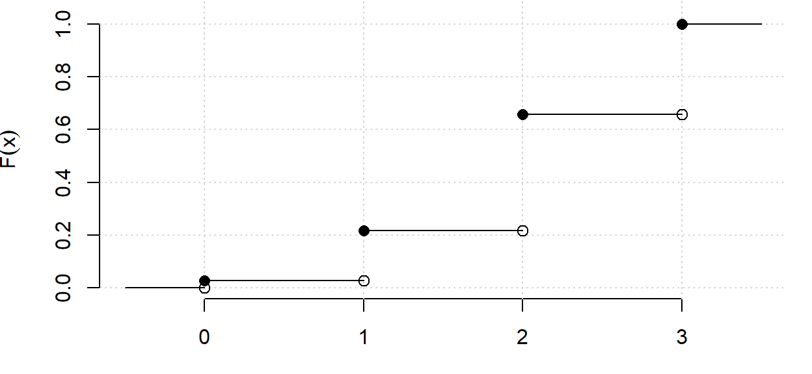
Elementos de Probabilidade e Estatística. Grao en Matemáticas
Ao rematar este tema deberías:
Estatística descritiva
Neste tema
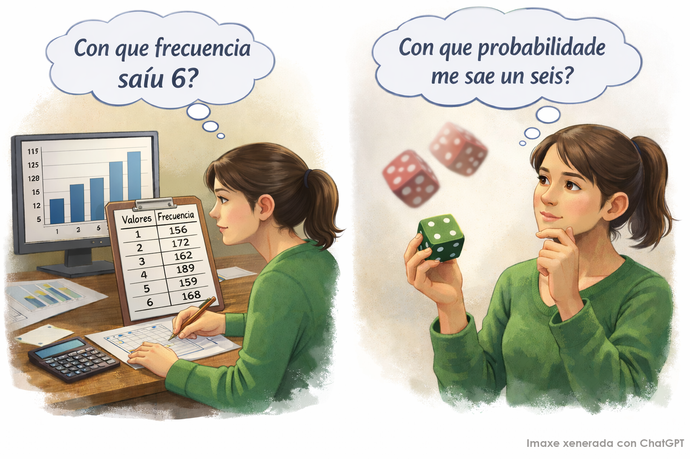
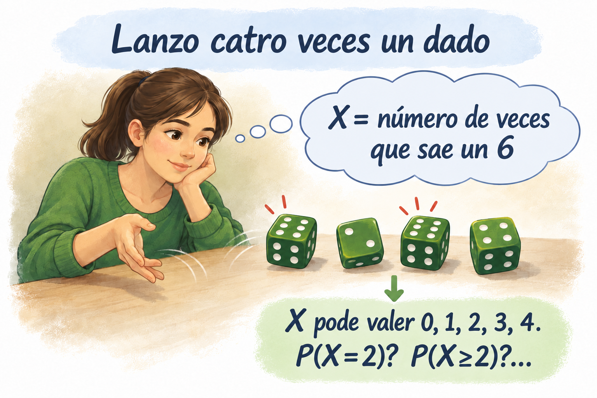
Variable aleatoria (definición intuitiva)
Unha variable aleatoria é unha aplicación que asigna un número real a cada resultado posible dun experimento aleatorio, permitindo cuantificar algunha característica dese resultado.
\[ \begin{array}{rccc} X:&\Omega&\longrightarrow &\mathbb{R} \\ &\omega&\longrightarrow &X(\omega) \end{array} \]
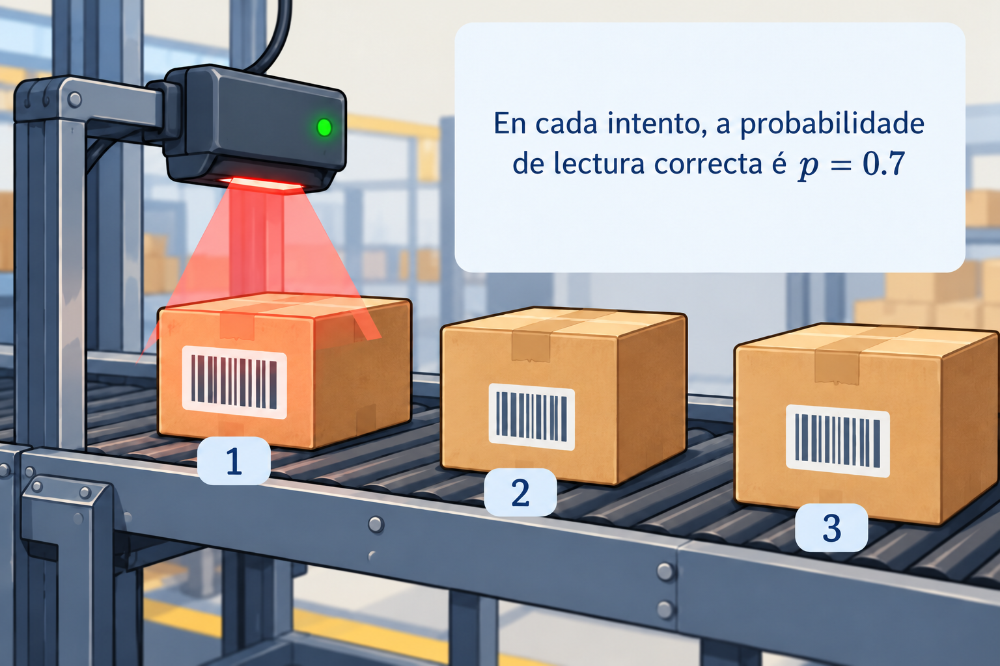
Un lector automático intenta ler o código de barras dos paquetes que pasan por unha cinta. En cada intento, a probabilidade de que o código se lea correctamente é \(p=0.7\), e a lectura dun paquete é independente das demais. O lector intenta ler o código de 3 paquetes.
\[ \Omega=\{FFF,\,FFC,\,FCF,\,CFF,\,FCC,\,CFC,\,CCF,\,CCC\} \]
Sexa \(X=\text{Número de lecturas correctas nos tres intentos}\)
\(X=\text{Número de lecturas correctas en tres intentos independentes}\)
\[ \begin{aligned} X:\Omega&\longmapsto \mathbb{R} \\ \{FFF\} &\longmapsto 0 \\ \{FFC,\,FCF,\,CFF\} &\longmapsto 1 \\ \{FCC,\,CFC,\,CCF\} &\longmapsto 2 \\ \{CCC\} &\longmapsto 3 \end{aligned} \]
\(\sigma\)-álxebra
Sexa unha familia \(\mathcal{A}\) de subconxuntos de \(\Omega\), é dicir, \(\mathcal{A}\subset\mathcal{P}(\Omega)\). Dicimos que \(\mathcal{A}\) é unha \(\sigma\)-álxebra sobre \(\Omega\) se cumpre:
\(\sigma\)-álxebra de Borel
A \(\sigma\)-álxebra de Borel é a clase mínima de conxuntos con estrutura de \(\sigma\)-álxebra que contén todos os intervalos de \(\mathbb{R}\). Denótase como \(\mathcal{B}\).
Variable aleatoria (definición formal)
Dado un espazo de probabilidade \((\Omega,\mathcal{A},P)\), unha variable aleatoria é unha función \(X:\Omega\longrightarrow \mathbb{R}\) que verifica \(X^{-1}(B)\in \mathcal{A}\), para todo \(B\in\mathcal{B}\).
Probabilidade inducida por unha variable aleatoria
Sexa \(X\) unha variable aleatoria definida sobre un espazo de probabilidade \((\Omega,\mathcal{A},P)\). A probabilidade inducida por \(X\) é a aplicación \(P_X:\mathcal{B}\longrightarrow [0,1]\) definida por
\[ P_X(B)=P(X^{-1}(B))=P(\{\omega\in\Omega:X(\omega)\in B\}) \ \ \ \text{con } B\in\mathcal{B}. \] Notación: Por simplicidade, escribiremos \(P(X\in B)=P_X(B)\)
Probabilidade de obter exactamente dúas lecturas correctas:
\[ P(X=2)=P_X(\{2\})=P(\{FCC,CFC,CCF\})=3(0.7)^2(0.3)=0.441 \]
Probabilidade de obter polo menos dúas lecturas correctas:
\[ P(X\geq 2)=P_X([2,\infty))=P(\{FCC,CFC,CCF,CCC\})=3(0.7)^2(0.3)+(0.7)^3=0.784 \]
Función de distribución dunha variable aleatoria
Dada unha variable aleatoria \(X\) definida sobre un espazo de probabilidade \((\Omega,\mathcal{A},P)\) con distribución de probabilidade \(P_X\), denomínase función de distribución de \(X\) á función \(F:\mathbb{R}\rightarrow [0,1]\) que, para cada valor \(x\in\mathbb{R}\), asigna a probabilidade de que a variable tome un valor menor ou igual que \(x\).
\[ F(x) = P(X\leq x)=P_X((-\infty,x]) = P(X^{-1}((-\infty, x]))= P(\{\omega \in \Omega : X(\omega) \leq x\}) \]
Función de distribución dunha variable aleatoria
Dada unha variable aleatoria \(X\) definida sobre un espazo de probabilidade \((\Omega,\mathcal{A},P)\) con distribución de probabilidade \(P_X\), denomínase función de distribución de \(X\) á función \(F:\mathbb{R}\rightarrow [0,1]\) que, para cada valor \(x\in\mathbb{R}\), asigna a probabilidade de que a variable tome un valor menor ou igual que \(x\).
\[ F(x) = P(X\leq x)=P_X((-\infty,x]) = P(X^{-1}((-\infty, x]))= P(\{\omega \in \Omega : X(\omega) \leq x\}) \]
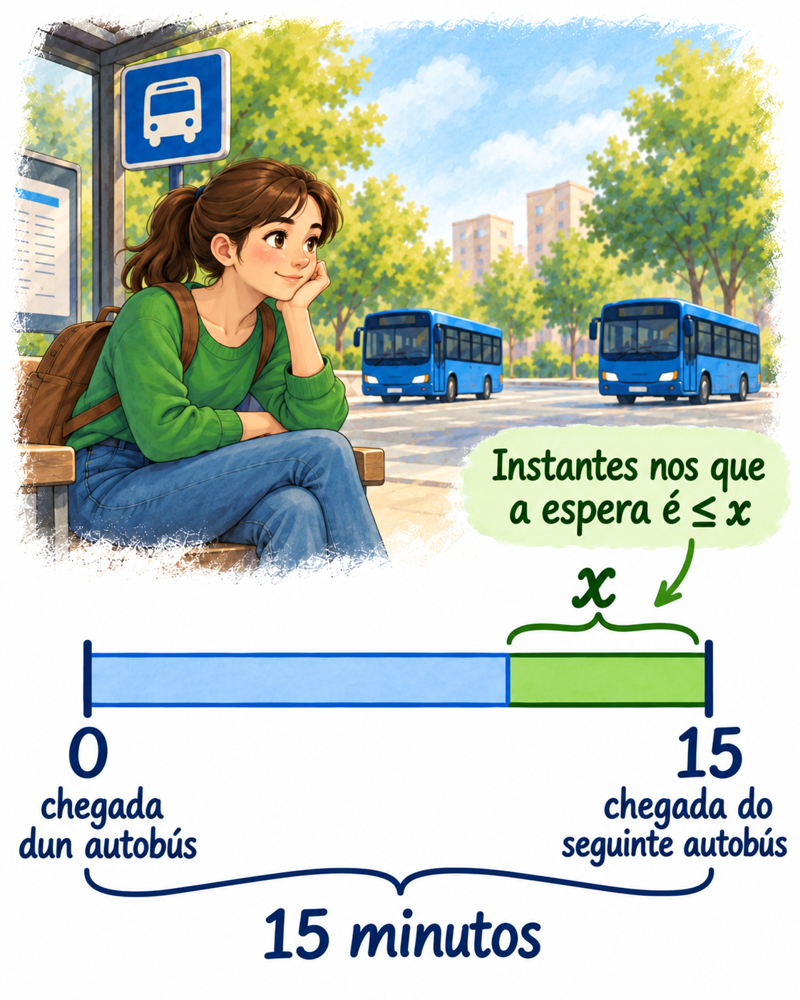
O autobús da liña 8 pasa por unha determinada parada cada quince minutos ao longo do día. Chego á parada nun momento aleatorio.
\(X=\text{Tempo que teño que esperar a que chegue o autobús da liña 8}\)
\[ F(x)=P(X \leq x)= \begin{cases} 0, & x<0, \\ \frac{x}{15}, & 0\le x<15, \\ 1, & x\ge 15. \end{cases} \]
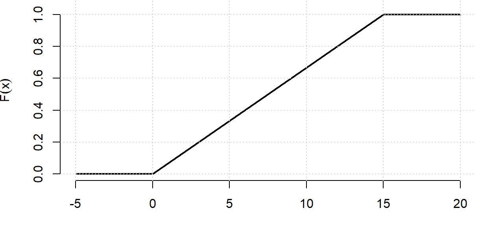
Función de distribución dunha variable aleatoria
Dada unha variable aleatoria \(X\) definida sobre un espazo de probabilidade \((\Omega,\mathcal{A},P)\) con distribución de probabilidade \(P_X\), denomínase función de distribución de \(X\) á función \(F:\mathbb{R}\rightarrow [0,1]\) que, para cada valor \(x\in\mathbb{R}\), asigna a probabilidade de que a variable tome un valor menor ou igual que \(x\).
\[ F(x) = P(X\leq x)=P_X((-\infty,x]) = P(X^{-1}((-\infty, x]))= P(\{\omega \in \Omega : X(\omega) \leq x\}) \]
Propiedades da función de distribución:
Ao igual que no tema de Estatística Descritiva, as variables aleatorias poden clasificarse en discretas e continuas, en función do conxunto de valores que poden tomar.
Variables aleatorias discretas
Toman valores nun conxunto finito ou numerable. Por exemplo, o número de caras ao lanzar dúas veces unha moeda ou o número de correos electrónicos clasificados como SPAM por un filtro.
A súa función de distribución presenta saltos nos valores con probabilidade positiva, sendo a altura de cada salto \(P(X=x)=F(x)-F(x^-)\), onde \(F(x^-)=\lim_{t\to x^-}F(t)\) é o límite pola esquerda de \(F\) en \(x\).
Variables aleatorias continuas
Toman todos os valores dentro dun ou varios intervalos da recta real, é dicir, unha cantidade infinita non numerable de valores. Por exemplo, se realizamos un experimento aleatorio no que obtemos un número ao azar entre no intervalo [0,1].
A súa función de distribución é continua.
Función de masa
Se \(X\) é unha variable discreta que toma valores \(\{x_i,i\in\mathbb{N}\}\), a súa distribución vén dada polos valores que pode tomar e polas probabilidades de que aparezan.
A función \(p(x)=P(X = x)\) denomínase función de probabilidade ou función de masa, sendo \(x\) donde calquera valor que poida tomar a variable. Observa que \(p(x)\geq 0\) para todo \(x\) e \(\sum_x p(x)=1\).
Función de densidade
Sexa \(X\) unha v.a. continua. A función de densidade de \(X\) é a función \(f\) non negativa e integrable tal que \[F(x)=P(X\leq x)=\int_{-\infty}^xf(t)dt.\]
De forma equivalente, \(f(x)=F'(x)\). A densidade non indica probabilidade directamente; a área baixo a curva entre dous valores é a que representa a probabilidade.
Función de densidade
Sexa \(X\) unha v.a. continua. A función de densidade de \(X\) é a función \(f\) non negativa e integrable tal que \[F(x)=P(X\leq x)=\int_{-\infty}^xf(t)dt.\]
De forma equivalente, \(f(x)=F'(x)\). A densidade non indica probabilidade directamente; a área baixo a curva entre dous valores é a que representa a probabilidade.
Propiedades da función de densidade:
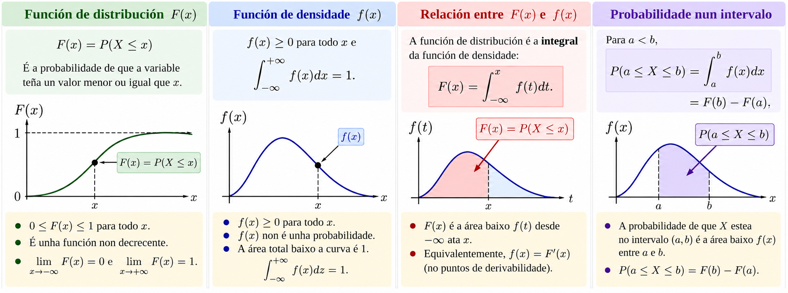
Os conceptos que permitían resumir unha distribución de frecuencias utilizando valores numéricos poden utilizarse tamén para describir a distribución de probabilidade dunha variable aleatoria.
A media ou esperanza \(\mu\) representa o valor esperado ao realizar o experimento coa variable aleatoria. Ademais, a media pode verse tamén como o valor central da distribución de probabilidade.
A varianza \(\sigma^2\) é un valor non negativo que expresa a dispersión da distribución arredor da media.
A desviación típica poboacional \(\sigma\) é a raíz cadrada da varianza.
Pódense calcular medidas de forma como asimetría ou curtose
Os cuantís son os valores por debaixo dos cales se acumula unha determinada probabilidade.
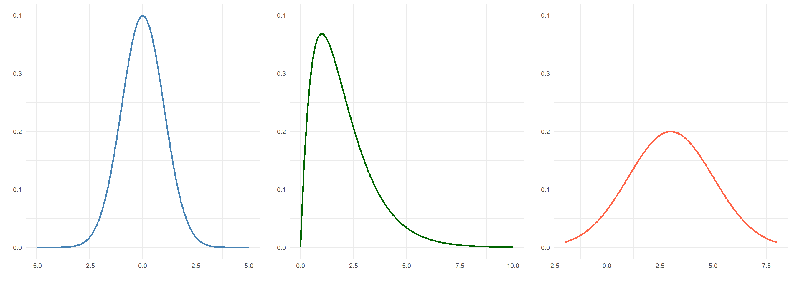
Media ou esperanza dunha variable aleatoria discreta
\[ \mu = \mathbb{E}(X) = \sum_{x} x P(X=x). \]
Varianza dunha variable aleatoria discreta
\[ \sigma^2 = \textnormal{Var}(X) = \mathbb{E}[(X-\mathbb{E}(X))^2]={\sum_{x} \left( x - \mu \right)^{2} P(X=x)}. \]
Pódese calcular de forma equivalente como \(\textnormal{Var}(X)=\mathbb{E}(X^2)-\mathbb{E}(X)^2.\)
\[ \begin{gathered} X=\text{Número de lecturas correctas en tres intentos independentes } (p=0.7)\\[4pt] \mu=0\cdot 0.027+1\cdot 0.189+2\cdot 0.441+3\cdot 0.343 =2.1\\[4pt] \sigma^2=(0-2.1)^2\cdot 0.027 + (1-2.1)^2\cdot 0.189 + (2-2.1)^2\cdot 0.441 + (3-2.1)^2\cdot 0.343 =0.63 \end{gathered} \]
Media ou esperanza dunha variable aleatoria continua
\[ \mu = \mathbb{E}(X) = \int_{-\infty}^{+\infty} x \, f(x)\, dx. \]
Varianza dunha variable aleatoria continua
\[ \sigma^2 = \textnormal{Var}(X)=\mathbb{E}[(X-\mathbb{E}(X))^2]= \int_{-\infty}^{+\infty} (x - \mu)^2 \, f(x)\, dx. \]
Pódese calcular de forma equivalente como \(\textnormal{Var}(X)=\mathbb{E}(X^2)-\mathbb{E}(X)^2.\)
\[ \begin{gathered} X=\text{Tempo que teño que esperar a que chegue o autobús da liña 8}\\ \mu=\int_{0}^{15} x\cdot \frac{1}{15}\,dx=7.5\\ \sigma^2=\int_{0}^{15} (x-7.5)^2\cdot \frac{1}{15}\,dx=18.75 \end{gathered} \]
Sexan \(X\) e \(Y\) variables aleatorias e \(a,b\in\mathbb{R}\) constantes.
Propiedades da esperanza
Propiedades da varianza
\(\textnormal{Var}(a+bX)=b^2\textnormal{Var}(X)\)
\(\textnormal{Var}(X+Y)=\textnormal{Var}(X)+\textnormal{Var}(Y)\) se \(X\) e \(Y\) son independentes (non en xeral).
Momentos non centrados de orde \(k\) (respecto da orixe)
\[ a_k=\mathbb{E}(X^k)= \begin{cases} \displaystyle\sum_i x_i^k P(X=x_i) & \longleftarrow \text{ se } X \text{ é discreta}\\[8pt] \displaystyle\int_{-\infty}^{+\infty}x^k f(x)\,dx & \longleftarrow \text{ se } X \text{ é continua} \end{cases} \]
Momentos centrados de orde \(k\) (respecto da media)
\[ m_k=\mathbb{E}[(X-\mathbb{E}(X))^k]= \begin{cases} \displaystyle\sum_i (x_i-\mathbb{E}(X))^k P(X=x_i) & \longleftarrow \text{ se } X \text{ é discreta}\\[8pt] \displaystyle\int_{-\infty}^{+\infty}(x-\mathbb{E}(X))^k f(x)\,dx & \longleftarrow \text{ se } X \text{ é continua} \end{cases} \]
A media e a varianza permiten establecer límites para certas probabilidades, mesmo sen coñecer a distribución completa da variable aleatoria.
Desigualdade de Markov
Se \(X\) é unha variable aleatoria non negativa, para todo \(c>0\):
\[ {P(X\geq c)\leq \frac{\mathbb{E}(X)}{c}} \]
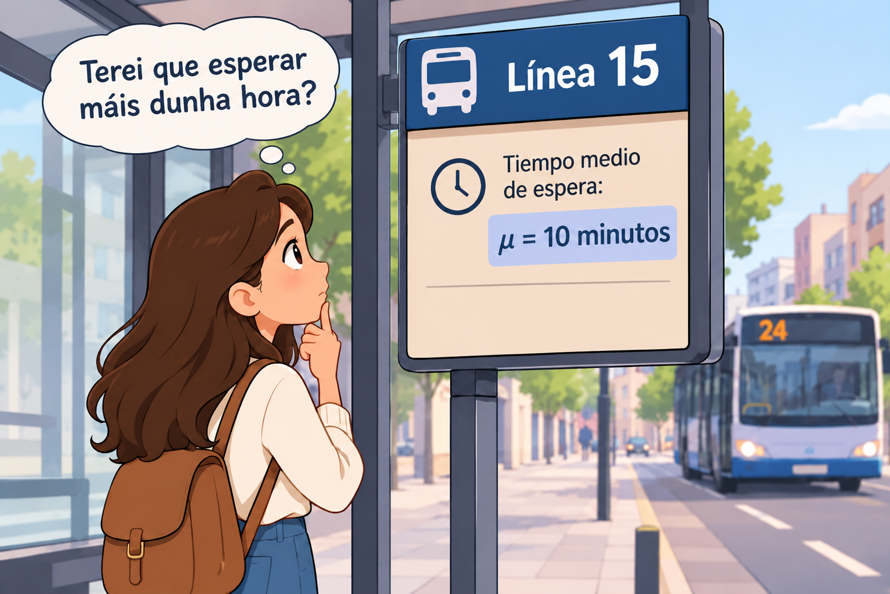
\[X=\text{Tempo que teño que esperar a que chegue o autobús da liña 15}\]
Non coñecemos a distribución do tempo de espera, pero sabemos que o tempo medio de espera é \(\mu=10\) minutos.
Que podemos afirmar sobre \(P(X\geq 60)\)?
\[P(X\geq 60)\leq \frac{10}{60}\approx 0.167\]
Aínda que non coñecemos a distribución, sabemos que como máximo aproximadamente o 16.7 % das esperas poden durar 60 minutos ou máis.
A media e a varianza permiten establecer límites para certas probabilidades, mesmo sen coñecer a distribución completa da variable aleatoria.
Desigualdade de Tchebyshev
Se \(X\) é unha variable aleatoria de media \(\mu\) e varianza finita \(\sigma^2>0\), para todo \(k>0\):
\[ {P(|X-\mu|\geq k\sigma)\leq \frac{1}{k^2}} \]
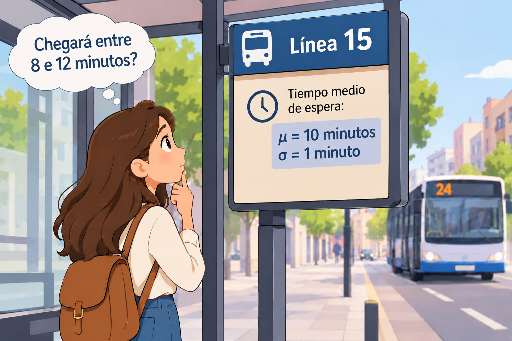
\[X=\text{Tempo que teño que esperar a que chegue o autobús da liña 15}\] Non coñecemos a distribución do tempo de espera, pero sabemos que o tempo medio de espera é \(\mu=10\) minutos e a desviación típica é \(\sigma=1\) minuto.
Que podemos afirmar sobre \(P(8< X< 12)\)?
\[P(8< X< 12)=P(\mu-2\sigma< X< \mu+2\sigma)=P(|X-\mu|< 2\sigma)=1-P(|X-\mu|\geq 2\sigma)\geq 1-\frac{1}{2^2}=0.75\]
Sen coñecer a distribución do tempo de espera, podemos asegurar que a probabilidade de esperar entre 8 e 12 minutos é polo menos do 75 %.
Cambio de variable
Sexa \(X\) unha v.a. sobre un espazo de probabilidade \((\Omega,\mathcal{A},P)\), con distribución de probabilidade \(P_X\), e \(g:\mathbb{R}\longrightarrow\mathbb{R}\) unha función medible. Entón \(Y=g(X)\) é unha variable aleatoria sobre \((\Omega,\mathcal{A},P)\) e para todo \(B\in\mathcal{B}\), \(P_Y(B)=P_X(g^{-1}(B))\).
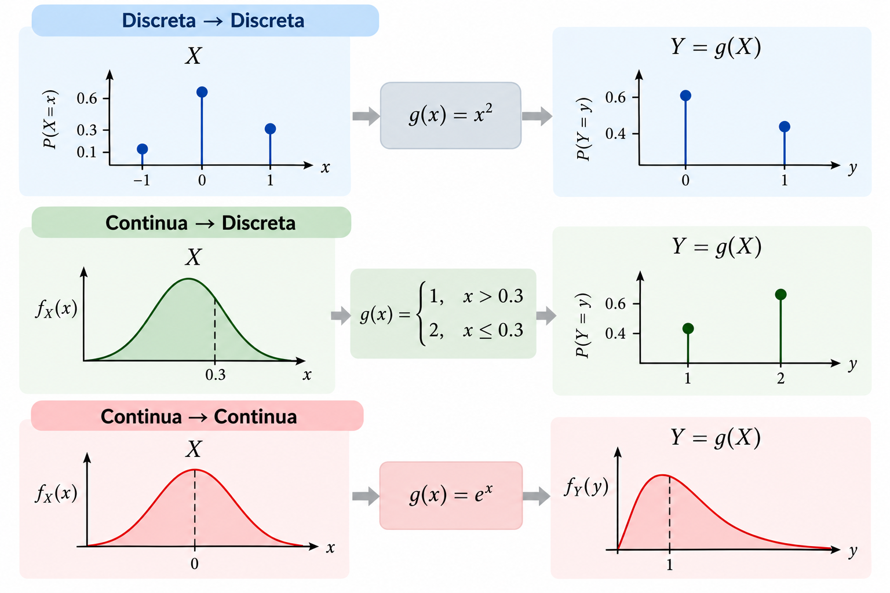
Definición
Sexa \(X\) unha variable aleatoria. Defínese a súa función xeratriz de momentos como
\[ M_X(t)=\mathbb{E}(e^{tX}) \]
para os valores de \(t\in\mathbb{R}\) nos que esta esperanza é finita.
Se existe a función xeratriz de momentos dunha variable aleatoria, esta determina de maneira única a súa distribución de probabilidade.
Cálculo
Se \(X\) é discreta:
\[ M_X(t)=\sum_x e^{tx}P(X=x) \]
Se \(X\) é continua:
\[ M_X(t)=\int_{-\infty}^{+\infty}e^{tx}f(x)\,dx \]
Propiedades
\(M_X(0)=1\)
A derivada de orde \(k\) de \(M_X(t)\), avaliada en \(t=0\), verifica:
\[M_X^{(k)}(0)=\mathbb{E}(X^k)\]
Definición
Sexa \(X\) unha variable aleatoria. Defínese a súa función característica como
\[ {\varphi_X(t)=\mathbb{E}(e^{itX})} \]
para todo \(t\in\mathbb{R}\), onde \(i\) é a unidade imaxinaria (\(i^2=-1\)).
A diferenza da función xeratriz de momentos, a función característica existe sempre e determina completamente a distribución dunha variable aleatoria.
É unha ferramenta importante na teoría da probabilidade, especialmente no estudo da converxencia de distribucións.
Ao rematar este tema deberías:
Beatriz Pateiro López